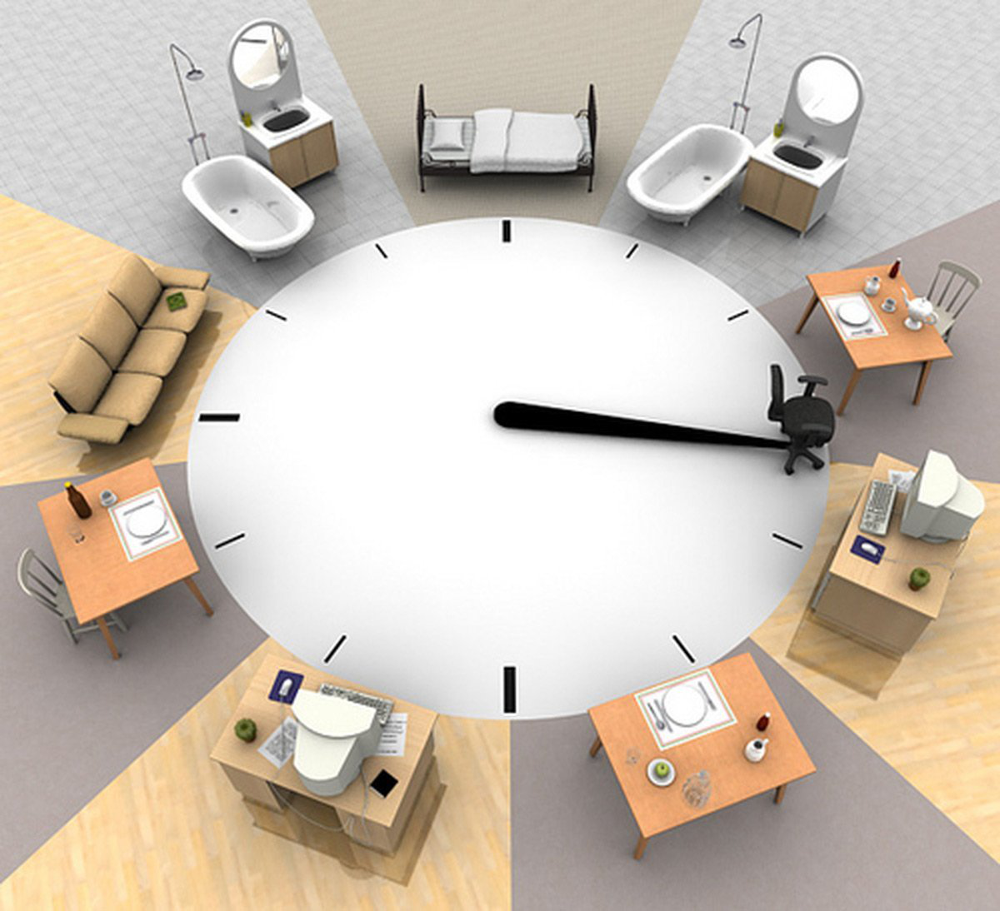
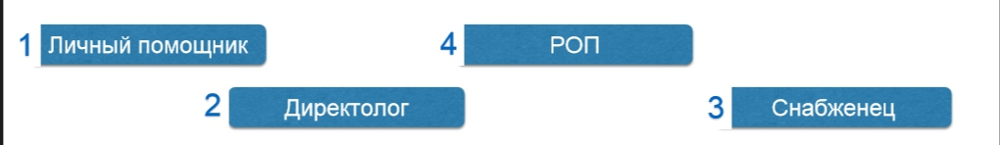

Простейший способ ухода от рутины
В этой статье я поделюсь очень простым, «на троечку», способом ухода от рутины для владельца или руководителя любой компании, отработанным на практике. Чтобы, наконец, можно было пойти в тренажерный зал, слетать с любимым человеком в ОАЭ или поиграть в любимую компьютерную игру. Или чем вы там давно хотели заняться без страха потери бизнеса?

А бывает «босс» — один человек «в компании» и грамотно передать на кого-либо другого процесс сложно, потому что:
Получается замкнутый бег по «треку боли».
Примеры выше не единственные. Да, что говорить, у нас самих и компаниях, с которыми работаем, похожая ситуация. Поэтому ниже делюсь способом, который позволил уйти от рутины на собственном опыте, на практике.
Ниже 5 простых шагов. Сразу просьба — двигаться к следующему шагу, только после того как сделали текущий, тогда это будет иметь смысл:
1. Берем лист бумаги А4, засекаем 10 минут и начинаем на листе подряд в хаотичном порядке выписывать все ВИДЫ действий, которые есть именно в вашей компании, повторяются изо дня в день.
и так далее. Таких видов действий должно быть минимум 30. Были рекорды по 80 и 120 видов действий.
Весь фокус состоит в том, что когда мы занимаемся, например, «мебельным бизнесом», то мозг как бы упрощает все процессы и сливает их все в один общий кисель, над которым красуется название компании.
Этот простой шаг позволяет понять, что в этом киселе есть отдельные «ягоды» — отдельные действия, которые в сумме формируют общую систему. И новые «ягоды» попадают туда постепенно в процессе развития. Здесь, кстати, возникает типичная ошибка начинающих предпринимателей, сужу по своему личному опыту — они сидят на «игле быстрых результатов». Из-за этого постоянно добавляют новые услуги и процессы в свою компанию.
Занимаетесь Яндекс Директом и одностраничными сайтами? Клиент обратился: «А можете сделать и маркетинг кит?» — «А почему бы и нет — это ведь дополнительные деньги!» И вот в этот момент происходит главная ошибка молодой компании — создание маркетинг кита — это увеличение объема «киселя» — плюс 20 дополнительных видов действий. Вроде бы они все небольшие, занимают совсем немного времени — но все эти мелкие детальки — это «камешки», которые накапливаются делают бизнес очень тяжелым — вот главная причина возникновения рутины в компании.
В общем, как раз из-за такой логики «беремся за все, за что платят деньги» развалилась предыдущая компания, которую мы запускали в Ростове-на-Дону с партнером с января по август 2015 года, в пик у нас работало 17 человек в офисе и около 100 человек в социальных сетях, как фрилансеры. Когда мы обратились к профессионалу, чтобы он создал для нас структуру — получилась структура крупного холдинга, который уже лет 10 существует на рынке и в которой должно быть около 150 должностей. Не повторяйте наших ошибок.
2. Продолжим. Следующий шаг — просто обвести кружком все виды действий, в которых вы так или иначе участвуете — полностью или периодически.
Возможна такая ситуация, что кружками обводятся все действия — значит либо вы 1 человек в компании, либо выписали не все действия.
3. Поставить "!" рядом с теми действиями, которые вы действительно хотите делать сами, они нравятся ИЛИ нельзя по любой причине передавать их на других людей.
Что получилось. Например: всего 44 действия, 30 из них в кружках и 10 восклицательных знаков.
30 кружков минус 10 "!" = 20 видов действий нужно делегировать — это причины рутины.
4. Ниже нужно выписать способы «уничтожения» рутины, а именно:
Например, мелкие задачи, такие как «отправить КП», «заполнить договор», «сходить на почту» может сделать личный помощник. А вместо действия «Напечатать письмо» можно просто сделать шаблон письма и так далее.
5. Допустим, получилось 5 способов уйти от рутинных действий. Если все они будут внедрены — станет гораздо легче дышать. Теперь осталось самое главное — просто проставить приоритет внедрения — что сделать первым, что вторым и далее. Первым для внедрения выбираем то решение, которое закроет самые рутинные функции и задачи и пишем как и когда это нужно сделать самым простым способом.

Это самая простая модель для ухода от рутины, которую уже неоднократно удалось применить на практике и получить реально гораздо больше свободного времени.
Другой вопрос — как сделать так, чтобы новые сотрудники все делали четко и можно было не боятся за качество — это уже вопрос добавления в работу обучения, видео роликов, регламентов, скриптов, других шаблонов.
Есть много вариантов развития событий и разветвлений. Об этом расскажу в дальнейших постах, если этот окажется полезным. Пишите вопросы, комментарии, мнение.